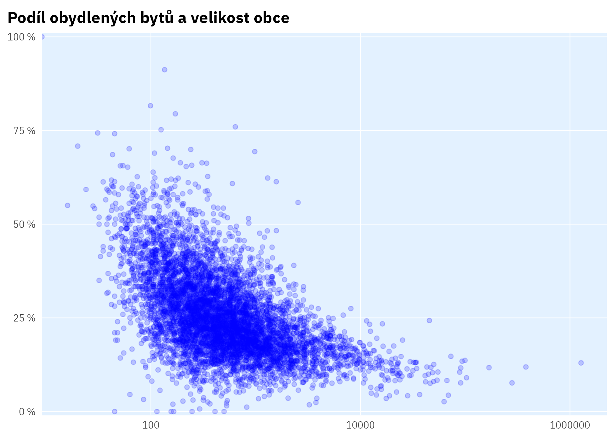

Neobydlené byty: vstupní analýza
Toto je pouze ukázka, jak lze podobnou analýzu udělat tak, že kód je reprodukovatelný a generuje přímo grafy a čísla do textu.
Využíváme data ČSÚ ze SLDB o obydlenosti bytů v obcích (Český statistický úřad 2021)
Kód
byty <- czso::czso_get_table("sldb2021_byty_obydlenost")
vzdel <- czso::czso_get_table("sldb2021_vzdelani")
obcekraje <- czso::czso_get_codelist("cis108vaz43")
obceorp <- czso::czso_get_codelist("cis65vaz43")
obyv <- czso::czso_get_table("130149") |>
filter(rok == max(rok), is.na(pohlavi_txt)) |>
select(uzemi_kod = vuzemi_kod, pocob = hodnota)Kód
byty_podily <- byty |>
filter(uzemi_cis == "43", !is.na(obydlenost_txt)) |>
select(hodnota, obydlenost_txt, uzemi_txt, uzemi_kod) |>
pivot_wider(names_from = obydlenost_txt, values_from = hodnota) |>
mutate(celkem = `obvykle obydlen` + `obvykle neobydlen`,
obydlenost_share = `obvykle obydlen`/celkem) |>
left_join(obyv) |>
mutate(pocob_kat = cut(pocob, breaks = c(0, 500, 1000, 10000,
100000, 1000000, 1e7),
labels = c("do 500", "500-1000", "1000-10000",
"10000-100000", "nad 100 tis.", "nad 1 mil."))) |>
left_join(obcekraje |>
select(kraj_nazev = TEXT1,
kraj_kod = CHODNOTA1,
uzemi_kod = CHODNOTA2)) |>
left_join(obceorp |>
select(orp_nazev = TEXT1,
orp_kod = CHODNOTA1,
uzemi_kod = CHODNOTA2))Základní náhled
Kód
byty_podily |>
# filter(kraj_kod %in% c("CZ020", "CZ054", "CZ080")) |>
ggplot(aes(1 - obydlenost_share, pocob)) +
geom_point(alpha = .2) +
coord_flip() +
labs(title = "Podíl obydlených bytů a velikost obce",
x = "Podíl obydlených bytů", y = "Počet obyvatel obce (log. měřítko)") +
scale_x_percent_cz() +
scale_y_log10() +
theme_ptrr("scatter")
Mediánový podíl obydlených bytů je 76 %.1
1 Toto číslo se do věty doplňuje automaticky z živých dat
Kód
byty_podily |>
drop_na(pocob_kat) |>
count(pocob_kat, wt = 1 - mean(obydlenost_share)) |>
ggplot(aes(pocob_kat, n)) +
scale_y_percent_cz() +
theme_ptrr() +
geom_col() +
labs(title = "Podíl neobydlených bytů podle velikostní skupiny obce")
Zde je deset obcí s nejvyšší obydleností bytů:
Kód
byty_podily |>
slice_max(obydlenost_share, n = 10) |>
select(uzemi_txt, `obvykle obydlen`, `obvykle neobydlen`, obydlenost_share, kraj_nazev, pocob) |>
gt::gt()| uzemi_txt | obvykle obydlen | obvykle neobydlen | obydlenost_share | kraj_nazev | pocob |
|---|---|---|---|---|---|
| Hněvnice | 49 | 0 | 1.0000000 | Plzeňský kraj | 114 |
| Dobříč | 234 | 0 | 1.0000000 | Středočeský kraj | 499 |
| Zhoř | 63 | 0 | 1.0000000 | Plzeňský kraj | 165 |
| Vřesová | 106 | 0 | 1.0000000 | Karlovarský kraj | 409 |
| Všehrdy | 67 | 0 | 1.0000000 | Ústecký kraj | 156 |
| Odrovice | 97 | 0 | 1.0000000 | Jihomoravský kraj | 247 |
| Zlátenka | 19 | 0 | 1.0000000 | Kraj Vysočina | 45 |
| Uhersko | 143 | 1 | 0.9930556 | Pardubický kraj | 292 |
| Droužkovice | 337 | 4 | 0.9882698 | Ústecký kraj | 821 |
| Modletice | 256 | 4 | 0.9846154 | Středočeský kraj | 528 |
Podle krajů
Kód
byty_podily |>
drop_na(pocob_kat) |>
count(kraj_nazev, wt = 1 - mean(obydlenost_share)) |>
mutate(kraj_nazev = as.factor(kraj_nazev) |> fct_reorder(n)) |>
ggplot(aes(n, kraj_nazev)) +
scale_x_percent_cz() +
geom_col() +
theme_ptrr("x")Podle krajů a velikosti obce
Kód
byty_podily |>
drop_na(pocob_kat) |>
filter(kraj_kod != "CZ010") |>
count(pocob_kat, kraj_nazev) |>
group_by(kraj_nazev) |>
mutate(podil = n/sum(n)) |>
ggplot(aes(pocob_kat, kraj_nazev)) +
theme_ptrr("none") +
scale_fill_viridis_b(n.breaks = 6, labels = label_percent_cz()) +
guides(fill = guide_bins(reverse = T)) +
geom_tile(aes(fill = podil), colour = "white", size = .6)Jak je obydlenost bytů v obcích rozložena v krajích?
Kód
byty_podily |>
drop_na(pocob_kat) |>
filter(pocob < 1e6) |>
ggplot(aes(obydlenost_share)) +
geom_histogram(aes(fill = pocob_kat)) +
facet_wrap(~ kraj_nazev) +
theme_ptrr(multiplot = TRUE)
Koreluje průměrná velikost obce v kraji a celková obydlenost bytů v kraji?
Kód
byty_podily |>
filter(kraj_kod != "CZ010") |>
mutate(kraj_nazev_short = str_remove(kraj_nazev, "\\s?[Kk]raj\\s?")) |>
group_by(kraj_nazev_short) |>
summarise(pocob_median = median(pocob),
mean_obydl = mean(obydlenost_share),
obydl_mean = sum(`obvykle neobydlen`)/sum(celkem)) |>
ggplot(aes(pocob_median, mean_obydl)) +
geom_smooth(method = "lm", colour = "darkblue", fill = ptrr:::ptclr_d,
formula = y ~ x) +
geom_point(colour = "blue") +
geom_label(aes(label = kraj_nazev_short), nudge_y = .01) +
scale_y_percent_cz() +
theme_ptrr(gridlines = "both")
Vliv kraje vs. velikosti obce
Abychom odhadli samostatný „vliv“ kraje na obydlenost bytů v obci, odhadneme lineární model vztahu mezi velikostí obce a obydleností.
Kód
byty_podily0 <- byty_podily |>
filter(!is.na(pocob),
pocob > 0,
kraj_kod != "CZ010") |>
mutate(pocob_log = log(pocob))
mdl <- lm(obydlenost_share ~ pocob_log, data = byty_podily0)
summary(mdl)#>
#> Call:
#> lm(formula = obydlenost_share ~ pocob_log, data = byty_podily0)
#>
#> Residuals:
#> Min 1Q Median 3Q Max
#> -0.58920 -0.05371 0.00893 0.06005 0.37909
#>
#> Coefficients:
#> Estimate Std. Error t value Pr(>|t|)
#> (Intercept) 0.4268069 0.0062190 68.63 <0.0000000000000002 ***
#> pocob_log 0.0509893 0.0009846 51.79 <0.0000000000000002 ***
#> ---
#> Signif. codes: 0 '***' 0.001 '**' 0.01 '*' 0.05 '.' 0.1 ' ' 1
#>
#> Residual standard error: 0.09353 on 6251 degrees of freedom
#> Multiple R-squared: 0.3002, Adjusted R-squared: 0.3001
#> F-statistic: 2682 on 1 and 6251 DF, p-value: < 0.00000000000000022Kód
mdl_tidy <- broom::tidy(mdl)
byty_podily_au <- broom::augment(mdl, data = byty_podily0)Model zachycuje cca 30 % variability obydlenosti bytů v obcích.
Graf níže ukazuje, jak se obydlenost bytů v obcích v jednotlivých krajích liší od očekávání, tj. od toho, jaká by měla být s ohledem na velikostní složení obcí.
Kód
byty_podily_au |>
mutate(kraj_nazev = as.factor(kraj_nazev) |> fct_reorder(.resid)) |>
ggplot(aes(.resid, y = kraj_nazev)) +
# geom_jitter(alpha = .2) +
geom_vline(xintercept = 0) +
geom_violin(colour = "darkblue", fill = ptrr:::ptclr_l, alpha = .8) +
scale_x_percent_cz() +
theme_ptrr("both") +
labs(title = "Rozdíl reality a predikce modelu")
V některých krajích je tedy systematicky nižší obydlenost bytů, než by odpovídalo velikostnímu složení obcí v daném kraji.